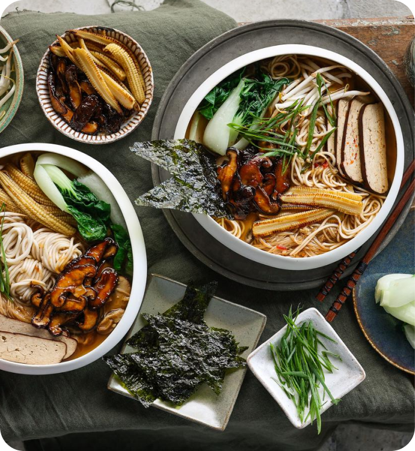

Terriyaki
Shiitake Shoyu
Ramen
-
TOTAL 40 min
-
PREP 15 min
-
COOK 25 min
ingridients

-
Broth
- ½ Tbsp (7 mL) sesame oil, plus extra for tossing with noodles
- 2 cloves garlic, crushed
- 1 tsp (2 g) freshly grated ginger
- 1 vegetable bouillon cube
- 2 tsp (10 g) doubanjiang chili bean paste
- 1.7 oz (50 g) shiitake mushroom, sliced
- 3.5 oz (100 g) enoki mushrooms
- 4 cups (960 mL) water
- 3 Tbsp (45 mL) sodium-reduced soy sauce
- 0.3 oz (10 g) kombu (dried kelp) (optional)
- 1 tsp (5 g) brown sugar, packed
- 1 tsp (5 mL) rice vinegar
- 7 oz (200 g) fresh ramen noodles
-
Grilled corn
- 3.5 oz (100 g) canned baby corn, halved lengthwise
- ½ Tbsp (7 mL) sesame oil
- 1 pinch salt
-
Teriyaki mushroooms
- 3.5 oz (100 g) shiitake mushroom, sliced
- ½ Tbsp (7 mL) sesame oil
- 1 Tbsp (15 mL) teriyaki sauce
-
Suggested toppings
- 4 heads baby bok choy, halved
- 5.2 oz (150 g) smoked tofu
- ½ cup (45 g) fresh bean sprouts
- 1 stalk green onion, thinly sliced
- 2 sheets of roasted seaweed snacks, halved
directions
- To a large pot on medium-high heat add the sesame oil, garlic, ginger, bouillon, doubanjiang, shiitake, and enoki. Cook for 1 minute.
- Then add the water, soy sauce, and kombu. Bring to a boil, reduce to a simmer, and cook covered for 20 minutes.
- Meanwhile, fry the baby corn over medium-high heat with sesame oil and salt. When golden, transfer to a plate.
- To the empty pan, fry the shiitake on medium-high heat in oil. When golden, turn off the heat, add the teriyaki sauce to the mushrooms, and stir to coat. Then remove the pan from the heat.
- Cook the noodles according to the package instructions. When cooked, remove the noodles from the water, but don't discard the water yet. Toss the noodles in a bit of sesame oil.
- Bring the noodle water back to a boil and add the bok choy. Cook for 30 - 60 seconds before draining.
- When the broth is ready, remove the kombu. Add the sugar and vinegar to the broth and stir through.
- Add the noodles to a bowl, pour over the broth, and top with corn, teriyaki mushrooms, and other desired toppings. Enjoy!